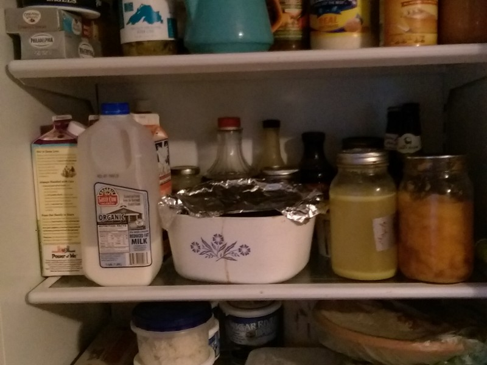

March 16, 2016
Supercook is Here to Help!

Can you remember what you had for dinner last night? Perhaps more importantly, can you remember what food you wasted yesterday? Food that we leave on our plates or allow to grow moldy in our refrigerators, not to mention the food that retailers toss because finicky customers don’t want brown spots or irregularly-shaped vegetables, translates into a lot of wasted resources.
According to March 2016 National Geographic “Growing the 133 billion pounds of food that retailers and consumers discard in the United States annually slurps up the equivalent of more than 70 times the amount of oil lost in the Gulf of Mexico’s Deep Horizon disaster….. If food waste were a country, it would be the third largest producer of greenhouse gases in the world, after China and the U.S.”
Each of us plays our own small but important part in shaving back those numbers, which in turn saves water, reduces agricultural pollution, and reduces greenhouse gas emissions. So, perhaps today is the day to inspect your refrigerator, clean out what truly can’t be eaten, and plan meals around what you have on hand.
Don’t know what to do with that half a can of pumpkin puree and chicken breast you found? Need some inspiration? The internet is here to help! Enter the ingredients you’d like to use into Supercook or other on-line recipe builder and you’ll soon be on your way to a cleaner fridge and cleaner planet, all while saving a little money along the way.